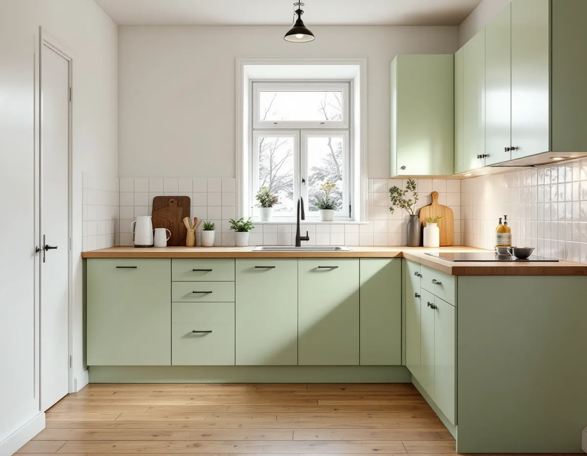
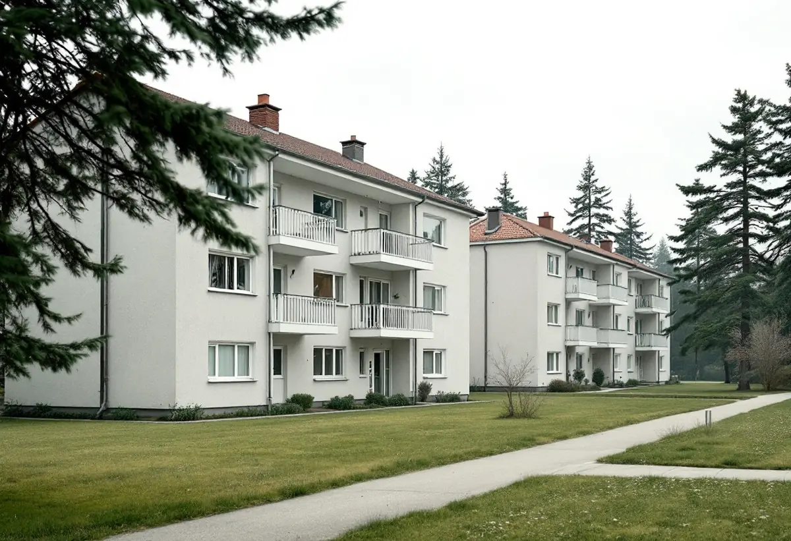
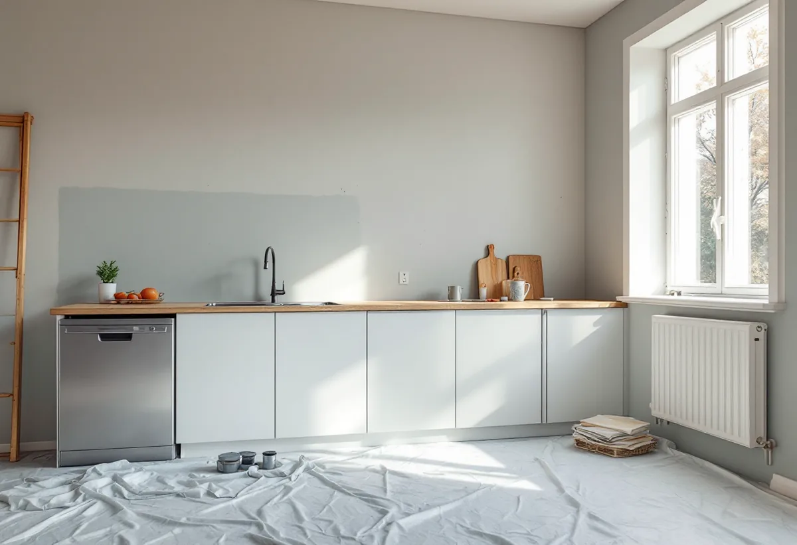

Platsbesök
Gratis besök där vi mäter och tittar på kanaler och stammar.
Vällingby byggdes under 1950-talet som en ABC-stad, där vardagen skulle vara rationell och nära till allt. I bostadsrätterna krävs styrelsens tillstånd när ledningar och ventilation ändras. Geal Entreprenad AB renoverar kök i lägenheter och radhus i Vällingby och tar fram underlaget till föreningen.

Översiktsplanens riksintressedel beskriver Vällingby–Råcksta som landets första ABC-stad, med arbete, bostäder och centrum. Ingen skulle ha längre än 900 meters gångväg från bostaden till tunnelbanan. I det sociala programmet ingick tankar om en blandad befolkning och lättillgänglighet, som också skulle skapa en rationell vardag för arbetande kvinnor. Området byggdes ut under 1950-talet. Stadens vägledning Varsam utveckling av småhus- och villaområden berättar att Vällingby invigdes 1954 och att bostäderna placerades i fallande skala runt centrum, med högre hus närmast och grupper av rad- och kedjehus längst ut.
Till det värdebärande räknar riksintressedelen de ursprungliga husens gestaltning och detaljer som fönster, entrépartier, balkonger och räcken – alltså exteriören. Köken inne i lägenheterna nämns inte, men en lägenhet kan ändå ha kulturhistoriska värden som föreningen behöver ta hänsyn till.

Stadens områdesfakta för 2025 räknar 2 076 bostadsrätter i Vällingby, varav 228 i småhus, och 1 551 i Råcksta. Bostadsrättslagen säger att bostadsrättshavaren inte får utföra vissa åtgärder utan styrelsens tillstånd: ingrepp i en bärande konstruktion, installation eller ändring av ledningar för avlopp, värme, gas eller vatten, installation eller ändring av ventilation, ändring av eldstad eller rökkanal och annan väsentlig förändring av lägenheten.
Har lägenheten särskilda kulturhistoriska värden krävs dessutom tillstånd för varje åtgärd som påverkar de värdena. Ett kök där diskbänken flyttas eller ventilationen ändras kan beröra flera av punkterna. Vi tar fram en ritning och en skriftlig beskrivning som styrelsen kan ta ställning till innan vi börjar.
Stockholms stad påminner om att ventilationskanalens sammanlagda mått måste räcka om badrumskanalen ska användas som kombinerad imkanal för köket och frånluftskanal för badrummet. Ett kök behöver tillräcklig frånluft och ska uppfylla kraven för imkanal. Staden råder att man tidigt pratar med skorstensfejarmästaren om en ny eller ändrad kanal.
Staden beskriver också att äldre hus ofta har självdrag, där luften sugs ut genom skorstenskanalen i kök och badrum, medan frånluft med centrala fläktar blev vanlig i hus byggda 1961–1975. I ett hus från 1950-talet tar vi därför reda på vilket system som finns innan fläkten väljs.
Vällingby har också 1 498 lägenheter i allmännyttan och 597 hos privata hyresvärdar. Staden skriver att du som hyresgäst normalt inte får flytta kök eller badrum. Bor du i bostadsrätt behöver du kontakta styrelsen innan du planerar en flytt.
I de 220 småhusen med äganderätt bestämmer du själv, men en anmälan kan behövas om bärande väggar, brandskydd eller ventilationen ändras. Mer om tjänsten finns under köksrenovering, och om golven finns golvslipning i Vällingby.

Gratis besök där vi mäter och tittar på kanaler och stammar.
Ritning och beskrivning till styrelsen.
Styrelsen eller kommunen ger klartecken.
Skåp, ytskikt och gamla installationer bort.
El, vatten, avlopp och imkanal.
Skåp, bänkskiva och vitvaror.
I en bostadsrätt ger Skatteverket rotavdrag för att montera fast köksinredning och installera vitvaror i samband med byggarbetet, för att riva innerväggar och bygga om planlösningen och för att byta köksluckor. Arbetet ska göras innanför lägenhetens tak, väggar och golv och gälla något du ansvarar för enligt stadgarna. I ett radhus med äganderätt gäller motsvarande regler för småhus.
Avdraget är högst 30 procent av arbetskostnaden och högst 50 000 kronor per person och år. Material, skåp och vitvaror ger inget avdrag, och Geal drar avdraget direkt på fakturan.
Kökets storlek och planlösning, om diskbänk eller spis flyttas, nya ledningar och kanaler, underlag till föreningen, skåp, bänkskivor och vitvaror. Efter ett gratis platsbesök får du ett skriftligt kostnadsförslag.
Planering, el, VVS, fläkt och väggar.
Köksrenovering i Stockholm →Takbyte, takbesiktning och plåtarbeten.
Takläggare i Vällingby →Radhusen i riksintresset Vällingby–Råcksta.
Takrenovering i Vällingby →Riksintresset och villaområdena.
Attefallshus i Vällingby →Riksintresset, radhusen och våtzonerna.
Badrumsrenovering i Vällingby →Bygga till i riksintresset.
Byggföretag i Vällingby →Puts från 1950-talet och kulör i riksintresset.
Fasadmålning i Vällingby →Tegel, puts och skivor på tunnelbanestadens hus.
Fasadrenovering i Vällingby →Radhus och kedjehus i riksintresset.
Fönsterbyte i Vällingby →Radhusens fönster.
Fönsterrenovering i Vällingby →Gamla mattor, lim och asbest.
Golvläggare i Vällingby →Lamellgolv, svikt och slitskikt.
Golvslipning i Vällingby →Radhus och lägenheter i ABC-staden.
Målare i Vällingby →Takplåt, rännor och beslag i riksintresset.
Plåtslagare i Vällingby →Entréer, dörrar och räcken på radhusen.
Snickare i Vällingby →Kälvesta och husgrupperna.
Takbyte i Vällingby →Väggar från 1950-talet.
Tapetsering i Vällingby →Radhusen, riksintresset och lovet.
Tillbyggnad i Vällingby →ABC-staden, eternit och föreningen.
Totalrenovering i Vällingby →